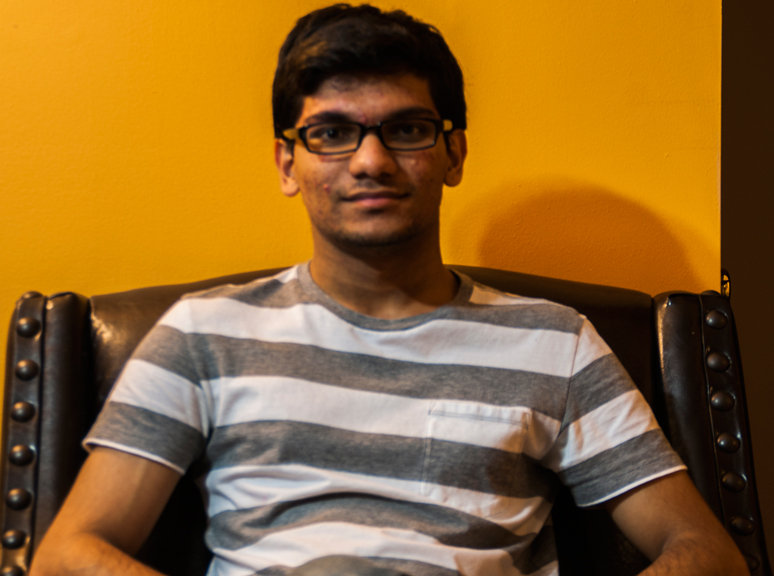

Thinking in another creative and imaginative way solves problems and yields us to the true beauty of the human mind. As a self-proclaimed programmer, web designer, peace-keeper, and humanitarian, at best I try to help the human species. This website samples some of my interests and professional work.